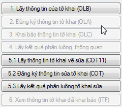

GIỚI THIỆU TỜ KHAI VẬN CHUYỂN - OLA
Tờ khai vận chuyển khai báo để cơ quan Hải quan cấp phép vận chuyển là hàng hóa xuất nhập khẩu và các loại hàng hóa khác đang chịu sự giám sát hải quan, được phép vận chuyển giữa hai địa điểm lưu giữ hàng hóa. Hay nói đơn giản tờ khai vận chuyển có chức năng tương tự như đơn xin chuyển cửa khẩu mà doanh nghiệp thường khai báo trên hệ thống điện tử trước đây.

- Thời điểm khai báo:
- Người khai thực hiện việc khai báo chính thức xin cấp phép vận chuyển hàng hóa khi hàng hóa đã được tập kết đầy đủ tại địa điểm lưu giữ hàng hóa chịu sự giám sát hải quan.
- Người khai có thể thực hiện việc khai báo trước thông tin xin cấp phép vận chuyển hàng hóa trước khi hàng hóa được tập kết đầy đủ tại địa điểm lưu giữ hàng hóa chịu sự giám sát hải quan
- Người khai chỉ được phép thực hiện việc vận chuyển hàng hóa khi thông tin khai báo xin cấp phép vận chuyển hàng hóa của Người khai đã được cơ quan hải quan phê duyệt.
- Khi nào thì người khai tiến hành khai báo vận chuyển?
- Hàng hóa xuất khẩu, nhập khẩu được phép chuyển cửa khẩu theo quy định tại Điều 18 Nghị định 154/2005/NĐ-CP;
- Hàng hóa vận chuyển từ cửa khẩu đến kho ngoại quan/CFS/kho bảo thuế/các khu phi thuế quan và ngược lại;
- Hàng hóa vận chuyển giữa các khu phi thuế quan;Hàng hóa vận chuyển từ địa điểm làm thủ tục hải quan này đến địa điểm làm thủ tục hải quan khác.Hàng hóa xuất khẩu, nhập khẩu tại chỗ.
Riêng đối với doanh nghiệp là Gia công, sản xuất xuất khẩu, chế xuất hoặc doanh nghiệp ưu tiên, đưa hàng vào khu phi thuế quan thì có thêm lựa chọn được phép khai vận chuyển đính kèm tờ khai (tại mục "Thông tin trung chuyển" trên tờ khai nhập khẩu/ xuất khẩu). Các trường hợp còn lại bắt buộc phải khai tờ khai vận chuyển độc lập (OLA).
- Quy trình khai báo vận chuyển
Dựa trên đặc điểm của tờ khai vận chuyển VNACCS là thực hiện khai báo theo các bước nghiệp vụ, các bước nghiệp vụ này đã được tính hợp sẵn trên các nút nghiệp vụ theo thứ tự các bước thực hiện như sau:

- Nút nghiệp vụ số 1 "1.Lấy thông tin của tờ khai (OLB)": khi tạo một tờ khai vận chuyển mới bạn sẽ thấy chỉ có nút này sáng lên nên có thể hiểu rằng sẽ thực hiện nghiệp vụ này đầu tiên nhưng thực tế thì nghiệp vụ này chỉ dùng để gọi lại thông tin tờ khai đã khai trước đó lên hệ thống của Hải quan. Cách thông thường là người khai sẽ tự nhập thông tin trên tờ khai mới (như phiên bản 4: Mở tờ khai mới và nhập liệu sau đó ghi lại và khai báo). Sau khi nhập thông tin tờ khai bạn ghi lại thì nút nghiệp vụ số 2 "2.Đăng ký thông tin tờ khai (OLA) " sẽ sáng lên như vậy có thể hiểu là người khai sẽ thực hiện bước nghiệp vụ này tiếp theo.
- Nút nghiệp vụ số 2 "2. Đăng ký thông tin tờ khai (OLA)": Khi hoàn thành nhập liệu người khai sử dụng nghiệp vụ này để khai tờ khai vận chuyển lên cơ quan hải, sau khi khai thành công hệ thống trả về số tờ khai. Khi này doanh nghiệp có 2 lựa chọn:
- a) Nếu các thông tin vừa khai là hoàn toàn chính xác không cần sửa đổi, người khai chọn nút nghiệp vụ số 3 "3. Khai báo thông tin tờ khai (OLC)" để đăng ký chính thức tờ khai vận chuyển lên cơ quan hải quan.
- b) Nếu người khai thấy thông tin vừa khai báo có thiếu sót cần sửa thì sử dụng nghiệp vụ OLB để gọi thông tin về sửa đổi (bước này có thể lặp lại nhiều lần mà không bị giới hạn) sau đó tiếp tục khai lại tờ khai vận chuyển bằng nghiệp vụ OLA.
- Nút nghiệp vụ số 3 "3.Khai báo thông tin tờ khai (OLC)": Người khai sử dụng nghiệp vụ này để khai chính thức thông tin đăng ký vận chuyển với cơ quan Hải quan.
- Nút nghiệp vụ 5.1 và 5.2 dùng để sửa thông tin đăng tờ khai vận chuyển đã đăng ký.
- Nút nghiệp vụ "6.Xem thông tin tờ khai đã khai báo (ITF)" dùng để gọi các thông tin đã đăng ký của tờ khai vận chuyển về để xem.
Hệ thống sẽ tự động tiếp nhận, kiểm tra thông tin khai báo, đăng ký và phân luồng tờ khai. Bạn tiếp tục chọn mã nghiệp vụ số 4 "4. Lấy kết quả phân luồng, thông quan" để nhận được kết quả phân luồng do hệ thống trả về.Để thực hiện việc nhập và khai báo tờ khai vận chuyển, bạn "xem chi tiết tại đây
Bản quyền © thuộc về Công ty TNHH Phát triển công nghệ Thái Sơn
Theo quy định tại Điều 33, thông tư 22-2014-TT-BTC thì những trường hợp sau đây được phép khai báo vận chuyển: